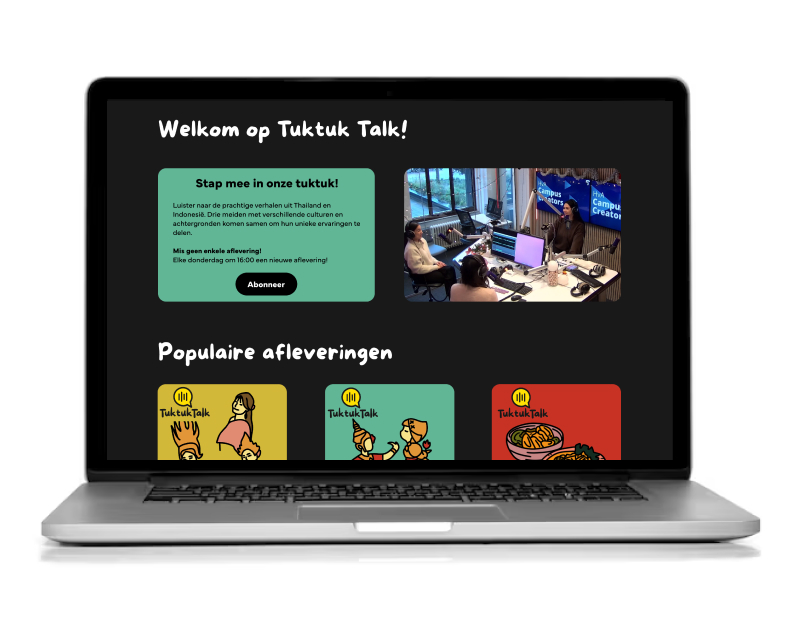
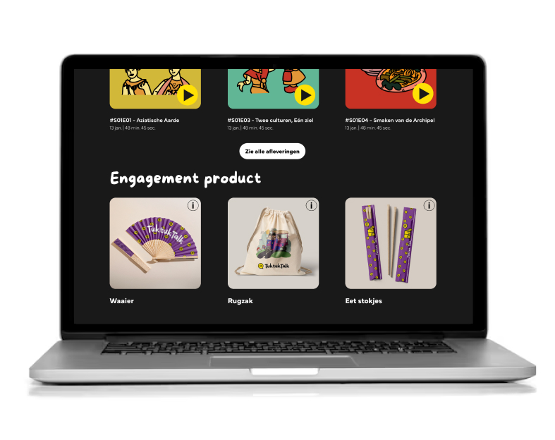

TuktukTalk – Podcast Website Prototype
Prototype (Figma)
View prototype↗About this project
For this Content course, my team and I created the concept for TuktukTalk — a podcast where we explore similarities and differences between people with mixed or international backgrounds living in the Netherlands.
Our group consists of students with Thai–Dutch, Indonesian–Dutch, and Thai backgrounds, and we wanted to create something that reflects our shared cultures. Since both Thailand and Indonesia use tuktuks, the name TuktukTalk became our foundation.
For the project, we designed a full podcast website prototype, created three pieces of merchandise in the Makerslab, and filmed a teaser video to promote the show.
Preview

